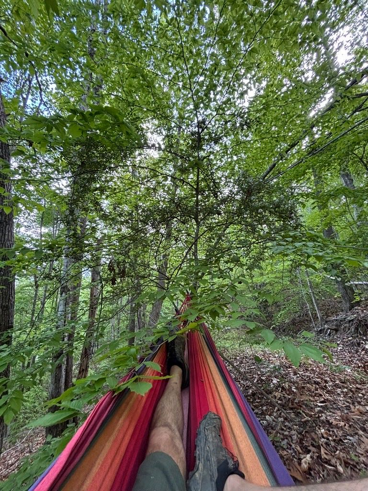
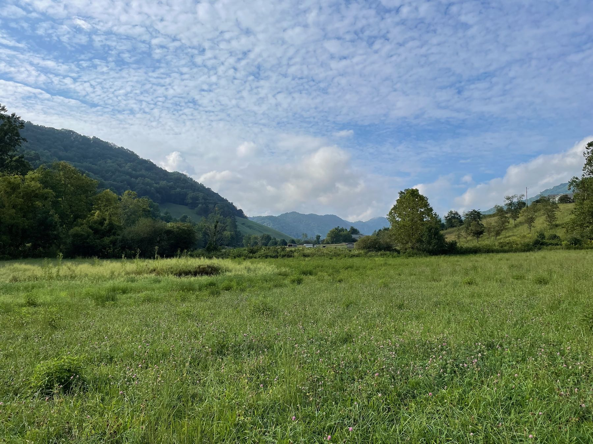

Peaceful Parking & Building.
A quiet valley for your tiny home, RV, or build: farms on three sides, views from every spot, and the sound of nothing but the creek.
We're seeking residents who want to be part of a real community: people with a vision for self-sufficiency who want to put this land to good use.
Is that you? →It's the conundrum that all tiny lifers face.
Where can you put your tiny? For short term, long term, or just the build process.
You're looking for your dream life. It reflects your values. Freedom, mobility, affordable living. All you need is a spot to place your tiny that's close to a city center yet offers peace and serenity.
Turkey Creek Oasis is just such an idyllic place. Located 25 minutes from downtown Asheville, it was designed to maintain the special feel of this agricultural area. Every spot has views. The Oasis offers some privacy and doesn't feel cramped. Bordered on three sides by farms, you'll enjoy the sound of nothing, save the occasional cow moo or rooster crow.
The drive to the property is truly breathtaking. Every. Single. Drive.

Yes, actual views of the property.




We believe that living in a tiny house is a great way to reduce your environmental footprint while still enjoying a comfortable lifestyle.
Our community is designed to foster a sense of belonging, creativity, and sustainability.
Have a vision, but no land?
We have 5 flat, farmable acres and 17 acres of forest on the slope, and very little of it is in use. It's waiting for someone with a plan.
If you've dreamed of growing food, raising animals, harvesting timber, or building cabins but don't own property, let's talk. Bring your idea and we'll figure out together what could work here.
Grow with us →
Camp by the creek.
Hipcamp campers love the creek area through spring, summer, and fall. Tent sites run around $15–25 a night.

Your tiny, our valley.
Have questions? Want to inquire about renting a pad for your tiny? Send us a note and we'll call you as soon as possible.